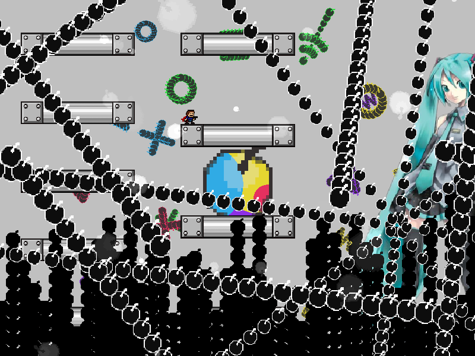
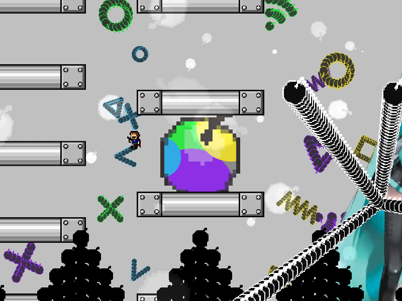

| creator | segment | label | jump |
|---|---|---|---|
| NN | 0:41.20~0:42.80 | P/Q | double |
角度のみが一定の条件のもとランダムな弾幕です。
与えられた状況を瞬時に判断し、回避行動の一連の流れ（どの足場に移動するか、あるいは滞空によって回避するかなど）を適切に選択することを目的とした弾幕となっています。
初音ミク右手部を中心として生成される放射状弾幕に関して、画面をループする前の形状について0:41.40におけるプレイヤーの位置から一定の高さのジャンプと左入力行うことによっていかなる場合においても回避可能であることを利用し、暗転が終了した直後に無条件でジャンプを繰り出す（その上で弾幕の状態を確認しながらジャンプの緩急および以降の回避に用いる経路を決定する）ことで攻略がしやすくなるかもしれません（fig.4-1.1）。
